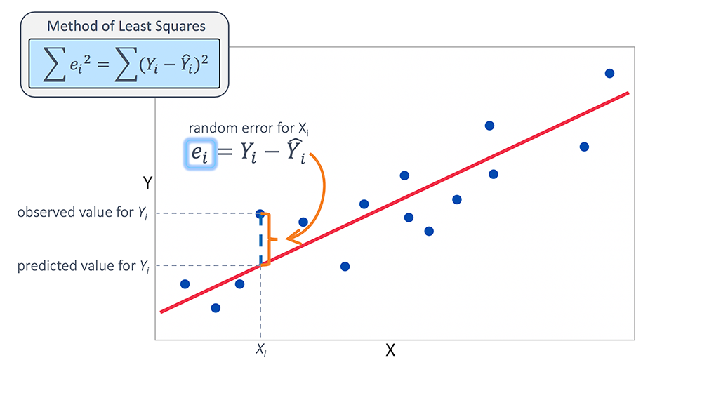
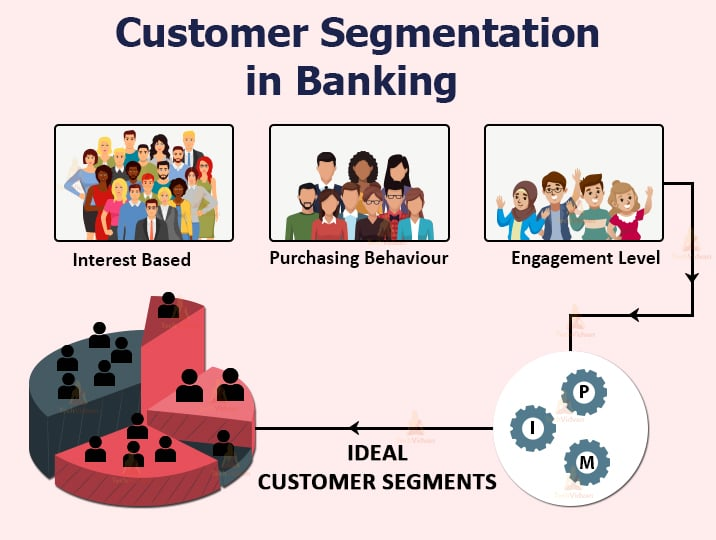

In this project we extract the combination of stocks daily closing price data from yahoo finance to calculate portfolio returns, risk, correlation and covariance between those assets for portfolio optimization and asset allocation,
these techniques are some of the strategies used by fund/portfolio managers in investment firms.
In this project we extract the combination of stocks daily closing price data from yahoo finance to use monte carlo simulation simulate the future stock prices,
this included calculating expected shortfall matrics like value at Risk(VaR) and Conditional Value at Risk(CVaR) in both JSE and NYSE.

In this project we extract the combination of stocks daily closing prices data from yahoo finance to use linear regression to find alpha, alpha measures the return
on an investment above what would be expected based on the level of risk, it is sometimes used as a simple measure of whether an asset outperformed an appropriate benchmark
such as actively managed mutual fund outperformed an index, such as S&P 500.

In this project we performed a market segmentation like the one used in the marketing departments of companies with python and customer data from excel, using unsupervised machine learning, K means Algorithm,
this project was designed to help companies find the spending habits of their customers, and help them reach their target customers easier with more accuracy, The Project is not yet complete.

In This Project We Used Natural Processing Language(NPL) model to convert texts into numbers and used these numbers to train an ML/AI model to make predictions about the customers' sentiments about a particular product or company.
The model helped traders to trade accordingly to public sentiments, which largely affect the volatility and price of an asset, The Project is not yet Complete.